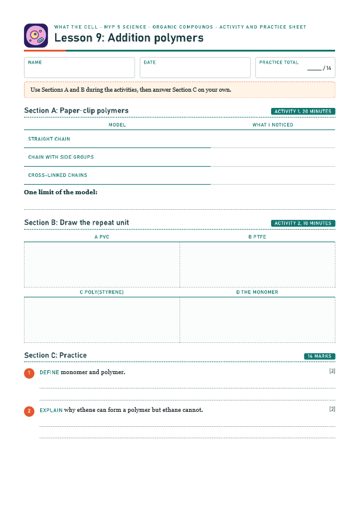

By the end of the lesson you can
- Define monomer, polymer and repeat unit
- Describe addition polymerisation of ethene
- Draw the repeat unit from a monomer, and the monomer from a repeat unit
- Name common addition polymers and give their uses
Keys: arrows or a presentation clicker move the slides, F for full screen. Slides with a red dot have a video or simulation.
Videos (all 5 minutes or less)
- 4:06
Polymerisation of propene and chloroethene
FuseSchool. While you watch: What happens to the double bond? Slide 9.
Simulations
- Lab
Print and practise

Activity and practice sheet
Used in the lesson’s activities, with practice questions. Your teacher has the answers.
Download (PDF)Lesson 9 slides
All 20 slides in one file, to read again or print. The video buttons on the slides open YouTube.
Download the slides (PDF)Revising? The Revision tab on the unit page has the unit notes and review.
Class activity pack
Everything to print for the lesson’s activities: picture cards, sorting mats, station cards with their kit lists, and the teacher’s set-up notes. Print it before class.
Download the activity pack (PDF)Notes: Addition polymers
repeat unit
The section of the polymer that repeats, drawn in brackets with a bond sticking out each side and a small n. For example: for poly(ethene): two carbons with four hydrogens.
naming polymers
Write poly, then the monomer name in brackets. For example: chloroethene makes poly(chloroethene), PVC.
resin code
A number from 1 to 7 that tells recyclers which plastic an item is made of. For example: 5 = poly(propene).
Key words
| monomer | a small molecule that joins to make a polymer |
|---|---|
| polymer | a very long chain of monomers |
| addition polymerisation | alkene monomers join; no other product |
| repeat unit | the repeating part, in brackets with n |
| poly(propene) | PP: ropes, food boxes |
| PVC | poly(chloroethene): pipes, raincoats |
| cross-link | a bond joining two polymer chains |